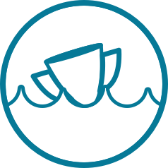

2019 Dirty River Derby
June 12th, 2019
The one and only meeting this year of the two teams. Louisville enters the battle with 2 DRD wins to Cincy's 1 and an Open Cup history between them.
| Team | W | L | T | GD | Points |
|---|---|---|---|---|---|
 Louisville City FC Louisville City FC |
0 | 0 | 0 | 0 | 0 |
 FC Cincinnati FC Cincinnati |
0 | 0 | 0 | 0 | 0 |
2019 Schedule
| Date | Location | Result |
|---|---|---|
| June 12 | Cincinnati | TBD |
The Dirty River Derby is the real name for all Cincinnati/Louisville rivalry games played in the league. The Open Cup match will be the only meeting and therefore the only effect on the standings in 2019.
2019 Plastic Cup
- TBD -
The Plastic Cup is a Supporters tournament played by the Louisville Coopers and Cincinnati Pride before each installment of the DRD. As of yet, no determination has been made as to whether 2019 will see another installment.